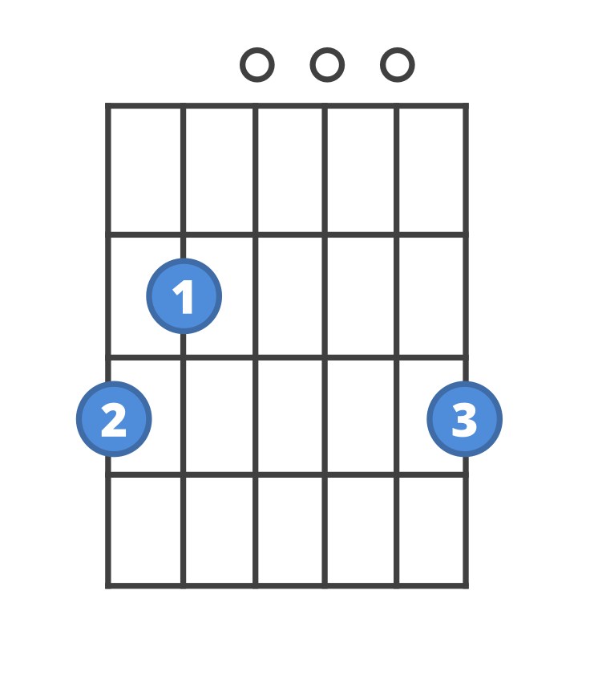

Chords
Chords are multiple notes played together at the same time. Chords can be played on multiple instruments including guitar and piano. The most basic songs can be as little as 2 chords.
Chords are an essential part of music, and especially guitar. The first thing beginners learn on guitar are the basic open chords. Open chord meaning that you play them with open strings making them the easiest chords to learn. The most basic type of chord is the major chord which includes the 1, 3, and 5 of that chords key. Bellow is a table of the easiest major chords.
Open Major Chords:
Chord Name: |
Notes in the chord: |
Chord fingering:(The lowest string is on the left if your on a mobile device, or the top if your on computer. If there is and X next to that string, that means don't play that string.) |
|---|---|---|
| C | C, E, and G |  |
| G | G, B, and D |  |
| D | D, F#, and A |  |
| E | E, G#, and G |
Although these chords are nice to know, often times most songs will have minor chords as well as major chords. A minor chord gives more of a suspensful, and colder feel, while a major chord is a lot brighter and cheerful. What makes a minor chord minor is that the 3rd is flat, so it would be the 1, b3, and 5 instead of the 1, 3, and 5. A mixture of both minor and mahor chords makes for a good song. Bellow is a table of some easy minor chords:
Open Minor Chords:
Chord Name: |
Notes in the chord: |
Chord fingering:(The lowest string is on the left if your on a mobile device, or the top if your on computer. If there is and X next to that string, that means don't play that string.) |
|---|---|---|
| Am | A, C, and E |  |
| Em | E, G, and B | |
| Dm | D, F, and A |  |
Chords aren't the only thing that make a song on guitar. You also need a rythym to strum the chords. To strum you brush over the strings with a pick or your fingers (perferably a pick) up and down skipping some beats in order to make a strumming rythm. On the right there is one of the most common strumming patterns. It's good to practice chords and strumming patterns seperately, and then once you're ready you can put them together. After you learn some of the chords, and how to strum you can look up your favorite songs, and find a tab where you can play along.
Chords aren't the only thing to learn. Scales are also an essential part of learning an intstrument, especially guitar. Click here to learn about scales.